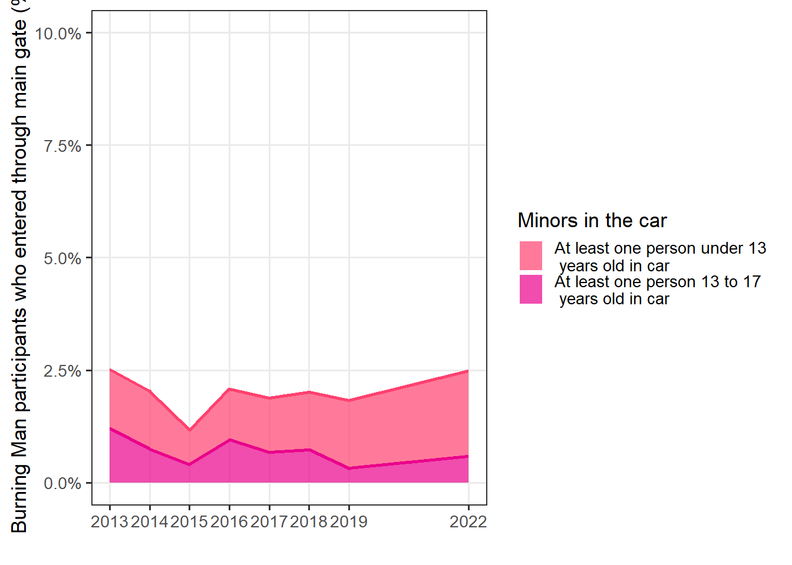
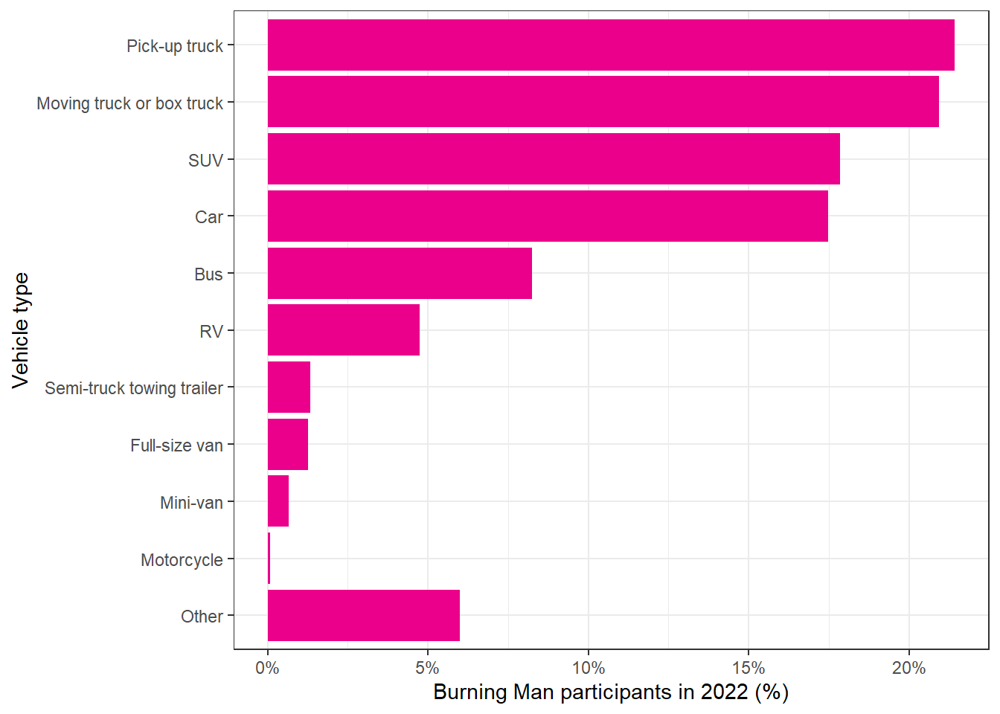
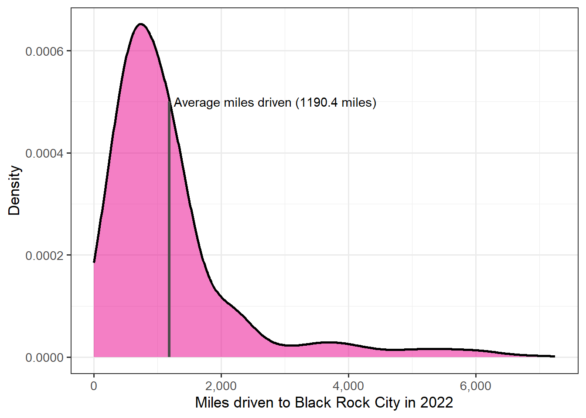
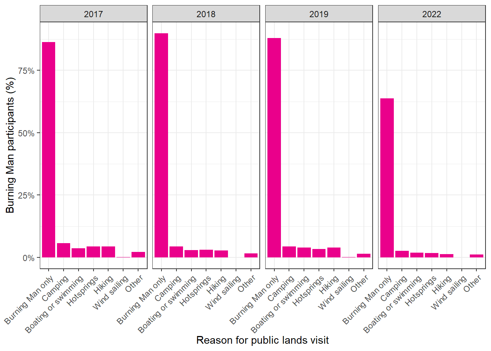

Chapter 5 Travel logistics
5.1 Arrival and departure
5.1.1 Arrival date

| 2022 | |
|---|---|
| Before Wed 8/24 | 9.2% (8.6%, 9.8%) |
| Wed 8/24 (pre-event) | 7.0% (6.5%, 7.6%) |
| Thu 8/25 (pre-event) | 10.2% (9.6%, 10.9%) |
| Fri 8/26 (pre-event) | 12.2% (11.5%, 12.9%) |
| Sat 8/27 (pre-event) | 13.2% (12.5%, 14.0%) |
| Sun 8/28 | 29.1% (28.0%, 30.3%) |
| Mon 8/29 | 10.8% (10.0%, 11.6%) |
| Tue 8/30 | 4.2% (3.7%, 4.7%) |
| Wed 8/31 | 2.8% (2.4%, 3.3%) |
| Thu 9/01 | 1.0% (0.7%, 1.3%) |
| Fri 9/02 | 0.2% (0.1%, 0.3%) |
| Sat 9/03 | < 0.1% (–, –) |
| Sun 9/04 | < 0.1% (–, –) |
| Mon 9/05 | < 0.1% (–, –) |
| Tue 9/06 | < 0.1% (–, –) |
5.1.2 Point of entry

| 2015 | 2016 | 2017 | 2018 | 2019 | 2022 | |
|---|---|---|---|---|---|---|
| Gate in a vehicle | 91.7% (91.0%, 92.3%) | 89.6% (88.8%, 90.5%) | 86.9% (86.0%, 87.8%) | 87.0% (86.1%, 87.8%) | 85.2% (84.3%, 86.1%) | 85.6% (84.7%, 86.4%) |
| Gate in a Burner Express Bus | 5.7% (5.1%, 6.3%) | 7.5% (6.8%, 8.2%) | 9.8% (9.1%, 10.6%) | 9.7% (9.0%, 10.5%) | 11.0% (10.2%, 11.8%) | 10.8% (10.1%, 11.6%) |
| Point 1 | 1.2% (1.0%, 1.5%) | 0.9% (0.8%, 1.2%) | 1.2% (1.0%, 1.4%) | 1.7% (1.4%, 2.0%) | 2.2% (1.8%, 2.6%) | 2.4% (2.1%, 2.8%) |
| BRC airport | 0.8% (0.6%, 1.1%) | 1.1% (0.8%, 1.5%) | 1.4% (1.2%, 1.8%) | 1.1% (0.8%, 1.3%) | 1.1% (0.8%, 1.4%) | 0.8% (0.6%, 1.1%) |
| Gate with another shuttle service | 0.3% (0.2%, 0.4%) | 0.6% (0.4%, 0.9%) | 0.3% (0.2%, 0.5%) | 0.3% (0.2%, 0.4%) | 0.4% (0.2%, 0.6%) | 0.1% (0.1%, 0.3%) |
| Other | 0.3% (0.2%, 0.4%) | 0.2% (0.1%, 0.5%) | 0.4% (0.2%, 0.6%) | 0.3% (0.2%, 0.5%) | 0.2% (0.1%, 0.4%) | 0.2% (0.1%, 0.4%) |
5.1.3 Departure date

| 2022 | |
|---|---|
| Before Sun 8/28 | < 0.1% (–, –) |
| Sun 8/28 | 4.9% (4.4%, 5.4%) |
| Mon 8/29 | 7.8% (7.2%, 8.5%) |
| Tue 8/30 | 2.0% (1.7%, 2.3%) |
| Wed 8/31 | 0.6% (0.4%, 0.7%) |
| Thu 9/01 | 0.8% (0.6%, 1.0%) |
| Fri 9/02 | 2.6% (2.3%, 3.0%) |
| Sat 9/03 | 9.6% (8.9%, 10.3%) |
| Sun 9/04 | 29.0% (27.9%, 30.2%) |
| Mon 9/05 | 27.8% (26.7%, 28.9%) |
| Tue 9/06 | 11.0% (10.3%, 11.7%) |
| After Tue 9/06 (post-event) | 3.4% (3.0%, 3.8%) |
5.1.4 Point of departure

| 2018 | 2019 | 2022 | |
|---|---|---|---|
| Gate in the same vehicle | 78.0% (77.0%, 79.0%) | 76.6% (75.5%, 77.6%) | 76.8% (75.8%, 77.8%) |
| Gate in a different vehicle | 10.1% (9.4%, 10.9%) | 10.3% (9.6%, 11.1%) | 11.3% (10.5%, 12.1%) |
| Gate in a Burner Express Bus | 8.3% (7.7%, 9.0%) | 9.3% (8.5%, 10.0%) | 8.0% (7.4%, 8.7%) |
| Point 1 | 2.0% (1.7%, 2.3%) | 2.3% (1.9%, 2.7%) | 2.6% (2.3%, 3.0%) |
| BRC airport | 1.0% (0.8%, 1.2%) | 0.9% (0.7%, 1.2%) | 0.7% (0.5%, 0.9%) |
| Gate with another shuttle service | 0.3% (0.2%, 0.5%) | 0.5% (0.3%, 0.7%) | 0.1% (0.1%, 0.2%) |
| Other | 0.3% (0.2%, 0.4%) | 0.2% (0.1%, 0.4%) | 0.4% (0.3%, 0.6%) |
5.2 Flying to Black Rock City
5.2.1 Flew in an airplane to get (at least part of the way) to Black Rock City this year?

| 2014 | 2015 | 2016 | 2017 | 2018 | 2019 | 2022 | |
|---|---|---|---|---|---|---|---|
| Flew (at least partway) to Black Rock City | 27.5% (26.6%, 28.4%) | 32.3% (31.2%, 33.4%) | 34.4% (33.0%, 35.7%) | 35.9% (34.7%, 37.2%) | 28.8% (27.7%, 29.9%) | 30.0% (28.8%, 31.2%) | 26.3% (25.2%, 27.4%) |
5.2.2 If you flew, what was your final arrival airport?

| 2014 | 2015 | 2016 | 2017 | 2018 | 2019 | 2022 | |
|---|---|---|---|---|---|---|---|
| Reno | 35.4% (33.7%, 37.2%) | 39.6% (37.6%, 41.6%) | 39.0% (36.6%, 41.4%) | 36.5% (34.4%, 38.6%) | 39.4% (37.1%, 41.6%) | 41.9% (39.6%, 44.2%) | 47.5% (45.1%, 49.9%) |
| San Francisco | 33.3% (31.5%, 35.0%) | 28.8% (27.0%, 30.7%) | 32.7% (30.3%, 35.1%) | 33.0% (30.8%, 35.3%) | 29.5% (27.3%, 31.7%) | 27.6% (25.5%, 29.7%) | 22.4% (20.4%, 24.6%) |
| Salt Lake City | 1.3% (0.9%, 1.8%) | 1.5% (1.1%, 2.1%) | 1.6% (1.2%, 2.3%) | 2.0% (1.5%, 2.8%) | 2.0% (1.5%, 2.9%) | 2.3% (1.7%, 3.1%) | 7.2% (6.1%, 8.6%) |
| Los Angeles | 9.4% (8.4%, 10.5%) | 10.9% (9.7%, 12.3%) | 7.0% (5.8%, 8.6%) | 8.3% (7.1%, 9.7%) | 6.8% (5.6%, 8.2%) | 7.6% (6.5%, 8.9%) | 5.9% (4.8%, 7.2%) |
| Sacramento | 3.7% (3.1%, 4.5%) | 3.6% (2.9%, 4.5%) | 3.2% (2.5%, 4.1%) | 3.2% (2.5%, 4.1%) | 4.5% (3.7%, 5.6%) | 6.1% (5.0%, 7.4%) | 5.2% (4.2%, 6.3%) |
| BRC (88NV) | 3.2% (2.6%, 4.0%) | 2.7% (2.1%, 3.4%) | 3.3% (2.5%, 4.3%) | 4.0% (3.2%, 4.9%) | 3.7% (2.9%, 4.6%) | 3.5% (2.7%, 4.5%) | 3.0% (2.3%, 3.9%) |
| Other | 13.7% (12.5%, 15.0%) | 12.9% (11.6%, 14.3%) | 13.2% (11.6%, 15.0%) | 13.0% (11.5%, 14.6%) | 14.1% (12.5%, 15.9%) | 11.0% (9.5%, 12.5%) | 8.7% (7.4%, 10.2%) |
5.3 Vehicle logistics
5.3.1 How many people were in your vehicle when you arrived at the Gate?

| 2013 | 2014 | 2015 | 2016 | 2017 | 2018 | 2019 | 2022 | |
|---|---|---|---|---|---|---|---|---|
| 1 | 11.9% (11.3%, 12.5%) | 12.8% (12.1%, 13.5%) | 9.1% (8.6%, 9.8%) | 10.5% (9.7%, 11.3%) | 12.0% (11.2%, 12.7%) | 13.5% (12.7%, 14.3%) | 13.9% (13.0%, 14.8%) | 17.4% (16.5%, 18.3%) |
| 2 | 41.3% (40.3%, 42.3%) | 44.6% (43.6%, 45.6%) | 36.5% (35.5%, 37.5%) | 40.1% (38.8%, 41.4%) | 41.9% (40.7%, 43.1%) | 43.6% (42.4%, 44.9%) | 43.2% (42.0%, 44.5%) | 51.3% (50.0%, 52.5%) |
| 3 | 18.7% (18.0%, 19.5%) | 19.8% (19.1%, 20.7%) | 15.3% (14.6%, 16.1%) | 17.2% (16.2%, 18.3%) | 16.5% (15.6%, 17.5%) | 15.2% (14.4%, 16.1%) | 15.2% (14.3%, 16.1%) | 16.7% (15.7%, 17.7%) |
| 4 | 13.2% (12.5%, 13.9%) | 11.8% (11.2%, 12.4%) | 10.3% (9.7%, 11.0%) | 11.1% (10.2%, 12.0%) | 9.3% (8.6%, 10.1%) | 9.3% (8.6%, 10.1%) | 8.8% (8.2%, 9.6%) | 8.8% (8.1%, 9.6%) |
| 5 | 5.6% (5.1%, 6.1%) | 5.3% (4.9%, 5.8%) | 4.9% (4.5%, 5.4%) | 4.4% (3.9%, 5.1%) | 3.7% (3.3%, 4.3%) | 3.6% (3.1%, 4.1%) | 3.2% (2.8%, 3.7%) | 3.8% (3.3%, 4.3%) |
| 6-7 | < 0.1% (–, –) | < 0.1% (–, –) | < 0.1% (–, –) | < 0.1% (–, –) | < 0.1% (–, –) | < 0.1% (–, –) | < 0.1% (–, –) | 1.7% (1.4%, 2.1%) |
| 8-9 | < 0.1% (–, –) | < 0.1% (–, –) | < 0.1% (–, –) | < 0.1% (–, –) | < 0.1% (–, –) | < 0.1% (–, –) | < 0.1% (–, –) | 0.2% (0.1%, 0.4%) |
| 10-19 | < 0.1% (–, –) | < 0.1% (–, –) | < 0.1% (–, –) | < 0.1% (–, –) | < 0.1% (–, –) | < 0.1% (–, –) | < 0.1% (–, –) | 0.1% (0.1%, 0.3%) |
| 20 or more | < 0.1% (–, –) | < 0.1% (–, –) | < 0.1% (–, –) | < 0.1% (–, –) | < 0.1% (–, –) | < 0.1% (–, –) | < 0.1% (–, –) | < 0.1% (–, –) |
5.3.2 Were any people in your vehicle under age 18?
| 2013 | 2014 | 2015 | 2016 | 2017 | 2018 | 2019 | 2022 | |
|---|---|---|---|---|---|---|---|---|
| At least one person under 13 years old in car | 1.3% (1.0%, 1.6%) | 1.3% (1.1%, 1.5%) | 0.8% (0.6%, 1.0%) | 1.1% (0.9%, 1.5%) | 1.2% (1.0%, 1.5%) | 1.3% (1.0%, 1.6%) | 1.5% (1.2%, 1.8%) | 1.9% (1.6%, 2.3%) |
| At least one person 13 to 17 years old in car | 1.2% (0.9%, 1.6%) | 0.7% (0.6%, 1.0%) | 0.4% (0.2%, 0.7%) | 0.9% (0.6%, 1.5%) | 0.7% (0.4%, 1.0%) | 0.7% (0.5%, 1.0%) | 0.3% (0.2%, 0.5%) | 0.6% (0.4%, 0.8%) |
5.3.3 In what type of vehicle did you travel to Black Rock City?
| 2022 | |
|---|---|
| Pick-up truck | 21.4% (20.4%, 22.5%) |
| Moving truck or box truck | 20.9% (19.9%, 22.0%) |
| SUV | 17.9% (16.9%, 18.8%) |
| Car | 17.5% (16.5%, 18.5%) |
| Bus | 8.2% (7.6%, 9.0%) |
| RV | 4.7% (4.3%, 5.3%) |
| Semi-truck towing trailer | 1.3% (1.1%, 1.6%) |
| Full-size van | 1.3% (1.0%, 1.6%) |
| Mini-van | 0.7% (0.5%, 0.9%) |
| Motorcycle | < 0.1% (–, –) |
| Other | 6.0% (5.4%, 6.6%) |
5.3.4 Was your vehicle towing a trailer?

| 2022 | |
|---|---|
| No trailer | 74.7% (73.6%, 75.8%) |
| Small | 2.8% (2.4%, 3.2%) |
| Medium | 6.9% (6.3%, 7.5%) |
| Large | 9.2% (8.5%, 9.9%) |
| Very large | < 0.1% (–, –) |
| I don’t remember | 6.4% (5.9%, 7.0%) |


5.4 Route to BRC
5.4.1 How many total miles did you drive to get to Black Rock City?
| 2015 | 2016 | 2017 | 2018 | 2019 | 2022 | |
|---|---|---|---|---|---|---|
| Mean (Miles) | 1170.1 (1144.5, 1195.6) | 1205.7 (1169.7, 1241.6) | 1214.2 (1181.2, 1247.2) | 1281.1 (1238.3, 1324.0) | 1145.9 (1118.6, 1173.3) | 1190.4 (1162.8, 1218.0) |
| 25th percentile | 680 (680, 700) | 680 (680, 700) | 680 (680, 700) | 680 (680, 700) | 680 (680, 700) | 680 (680, 700) |
| Median | 800 (800, 900) | 800 (800, 930) | 800 (800, 900) | 900 (800, 998) | 770 (750, 800) | 900 (850, 998) |
| 75th percentil | 1342 (1342, 1360) | 1342 (1342, 1400) | 1342 (1342, 1400) | 1342 (1342, 1400) | 1339.2 (1300, 1342) | 1342 (1342, 1400) |
5.4.2 Route through Nevada to Black Rock City

| 2019 | 2022 | |
|---|---|---|
| From San Francisco or Sacrament to RENO to BRC via I-80 | 34.7% (33.4%, 36.0%) | 31.2% (30.0%, 32.4%) |
| From Reno, NV | 21.7% (20.6%, 22.8%) | 22.9% (21.9%, 24.0%) |
| From Washington, Oregon, Northern California on Route 447 | 12.8% (12.0%, 13.8%) | 12.3% (11.5%, 13.1%) |
| From the Utah border via I-80 | 8.2% (7.5%, 9.0%) | 9.7% (8.9%, 10.5%) |
| From Los Angeles or San Diego DIRECT to BRC via US-395 | 6.0% (5.4%, 6.7%) | 6.0% (5.4%, 6.7%) |
| From Los Angeles or San Diego to RENO to BRC via US-395 | 4.3% (3.8%, 4.9%) | 5.1% (4.6%, 5.7%) |
| From Las Vegas, NV | 3.9% (3.4%, 4.5%) | 4.9% (4.4%, 5.5%) |
| Different route | 5.0% (4.4%, 5.6%) | 4.5% (4.0%, 5.0%) |
| From the Arizona border via US-93/US-95 | 1.4% (1.1%, 1.8%) | 1.6% (1.4%, 2.0%) |
| From Central or Southern California via US-6/US-95 | 0.9% (0.7%, 1.2%) | 0.7% (0.5%, 1.0%) |
| From Southern California to Las Vegas to BRC via I-15 | 0.2% (0.1%, 0.4%) | 0.3% (0.2%, 0.5%) |
| I don’t know | 0.7% (0.5%, 1.0%) | 0.7% (0.5%, 1.0%) |
5.5 Visiting Nevada
5.5.1 Did you stop at any locations in Gerlach?

| 2022 | |
|---|---|
| Roadside vendors (non-food) | 9.4% (8.7%, 10.1%) |
| Roadside vendors (food) | 6.7% (6.1%, 7.4%) |
| Bruno’s Country Club | 4.5% (4.1%, 5.0%) |
| High Rock Pizza | 3.3% (2.9%, 3.8%) |
| The Gerlach Burning Man Project office | 3.3% (2.9%, 3.7%) |
| Miners Club | 2.2% (1.9%, 2.5%) |
| The Oasis | 2.0% (1.7%, 2.3%) |
| The 360 | 1.1% (0.9%, 1.3%) |
| Joe’s Gerlach Club | 1.0% (0.8%, 1.2%) |
| Granite Point RV Park | 0.4% (0.3%, 0.5%) |
| The Desert Club (Hotel) | 0.2% (0.1%, 0.4%) |
| Other | 6.2% (5.7%, 6.8%) |
| I did not stop | 57.3% (56.1%, 58.5%) |
5.5.2 Did you visit any parks or recreation areas this year on your way to or from Black Rock City?

| 2015 | 2016 | 2017 | 2018 | 2019 | 2022 | |
|---|---|---|---|---|---|---|
| Yes, one place | 16.9% (16.0%, 17.8%) | 15.7% (14.7%, 16.8%) | 16.8% (15.9%, 17.9%) | 14.9% (14.1%, 15.8%) | 16.8% (15.8%, 17.8%) | 13.6% (12.7%, 14.4%) |
| Yes, more than one place | 10.2% (9.5%, 11.0%) | 9.0% (8.2%, 9.9%) | 10.4% (9.6%, 11.2%) | 9.0% (8.3%, 9.7%) | 9.1% (8.4%, 9.9%) | 6.6% (6.1%, 7.3%) |
| No | 71.1% (70.0%, 72.2%) | 73.5% (72.2%, 74.8%) | 71.3% (70.1%, 72.4%) | 74.9% (73.8%, 76.0%) | 72.8% (71.7%, 73.9%) | 77.5% (76.4%, 78.5%) |
| Not sure | 1.8% (1.5%, 2.2%) | 1.8% (1.4%, 2.2%) | 1.5% (1.2%, 1.9%) | 1.2% (0.9%, 1.5%) | 1.3% (1.0%, 1.6%) | 2.3% (2.0%, 2.8%) |
5.5.3 Reasons for visiting public lands near Black Rock City going to or from the Burning Man event
| 2017 | 2018 | 2019 | 2022 | |
|---|---|---|---|---|
| Burning Man only | 86.3% (85.0%, 87.4%) | 89.8% (88.9%, 90.7%) | 87.9% (86.9%, 88.9%) | 63.8% (62.6%, 64.9%) |
| Camping | 5.8% (5.0%, 6.6%) | 4.4% (3.8%, 5.1%) | 4.3% (3.7%, 5.0%) | 2.7% (2.3%, 3.1%) |
| Boating or swimming | 3.7% (3.1%, 4.3%) | 2.9% (2.4%, 3.4%) | 3.9% (3.3%, 4.5%) | 1.9% (1.6%, 2.3%) |
| Hotsprings | 4.3% (3.7%, 5.0%) | 3.1% (2.7%, 3.7%) | 3.4% (2.9%, 4.1%) | 1.7% (1.4%, 2.0%) |
| Hiking | 4.4% (3.7%, 5.2%) | 2.7% (2.3%, 3.3%) | 3.9% (3.3%, 4.6%) | 1.3% (1.0%, 1.6%) |
| Wind sailing | 0.1% (0.0%, 0.3%) | < 0.1% (–, –) | < 0.1% (–, –) | < 0.1% (–, –) |
| Other | 2.2% (1.8%, 2.7%) | 1.6% (1.3%, 2.0%) | 1.5% (1.2%, 1.9%) | 1.2% (0.9%, 1.5%) |
5.5.4 Do you intend to come back to the Black Rock Desert outside of the Burning Man event?

| 2017 | 2018 | 2019 | 2022 | |
|---|---|---|---|---|
| Yes | 17.1% (16.1%, 18.2%) | 17.5% (16.6%, 18.5%) | 18.8% (17.8%, 19.8%) | 18.9% (18.0%, 19.8%) |
| Maybe | 37.7% (36.3%, 39.1%) | 36.1% (34.9%, 37.4%) | 35.6% (34.4%, 36.8%) | 31.6% (30.5%, 32.7%) |
| No | 45.1% (43.7%, 46.6%) | 46.4% (45.1%, 47.6%) | 45.6% (44.4%, 46.9%) | 49.5% (48.3%, 50.7%) |
5.6 Expenses
5.6.1 How much did you spend this year to travel to and from Black Rock City (not including your ticket)?

| 2015 | 2016 | 2017 | 2018 | 2019 | 2022 | |
|---|---|---|---|---|---|---|
| 1% | $150 ( $150, $200) | $130 ( $100, $200) | $150 ( $100, $200) | $200 ( $200, $250) | $200 ( $200, $250) | $250 ( $200, $300) |
| 10% | $500 ( $500, $600) | $500 ( $500, $600) | $500 ( $500, $600) | $500 ( $500, $600) | $550 ( $500, $600) | $800 ( $800, $900) |
| 25% | $800 ( $800, $900) | $900 ( $900, $1000) | $1000 ( $1000, $1200) | $1000 ( $1000, $1150) | $1000 ( $1000, $1200) | $1375 ( $1250, $1500) |
| 50% (median) | $1500 ( $1500, $1700) | $1500 ( $1500, $1700) | $1500 ( $1500, $1700) | $1500 ( $1500, $1655) | $1600 ( $1500, $1800) | $2000 ( $2000, $2300) |
| 75% | $2500 ( $2500, $3000) | $2500 ( $2500, $3000) | $2500 ( $2500, $3000) | $2500 ( $2500, $3000) | $2500 ( $2500, $3000) | $3500 ( $3500, $4000) |
| 90% | $4000 ( $4000, $4500) | $4000 ( $4000, $4500) | $4000 ( $4000, $4800) | $4000 ( $4000, $4500) | $4000 ( $4000, $4500) | $6000 ( $6000, $7000) |
| 99% | $10000 ( $10000, $13200) | $10000 ( $10000, $15000) | $12000 ( $11000, $15000) | $10000 ( $10000, $13000) | $10700 ( $10000, $14000) | $18000 ( $15000, $20000) |
5.6.2 How much did you spend in Nevada?

| 2015 | 2016 | 2017 | 2018 | 2019 | 2022 | |
|---|---|---|---|---|---|---|
| Average fuel spending | $123.9 (117.4, 130.4) | $112.1 (104.1, 120.0) | $111.4 (105.6, 117.2) | $127.8 (120.0, 135.6) | $133.5 (124.2, 142.9) | $239.5 (213.5, 265.6) |
| Average food spending | $149.5 (137.4, 161.7) | $154.4 (131.9, 176.8) | $153.9 (135.9, 171.8) | $152.9 (140.5, 165.4) | $163.0 (145.9, 180.0) | $231.3 (196.3, 266.3) |
| Average lodging spending | $113.3 (84.9, 141.6) | $134.2 (45.4, 223.0) | $139.2 (66.7, 211.8) | $136.6 (80.0, 193.3) | $164.3 (67.4, 261.2) | $332.8 (85.3, 580.3) |
| Average survival spending | $89.3 (78.9, 99.7) | $97.4 (76.5, 118.4) | $100.6 (79.0, 122.1) | $95.7 (76.4, 115.1) | $100.7 (82.6, 118.8) | $267.1 (66.8, 467.4) |
| Average fun spending | $102.1 (81.7, 122.6) | $96.8 (72.4, 121.2) | $106.0 (76.9, 135.0) | $107.3 (79.8, 134.9) | $110.0 (85.1, 135.0) | $260.5 (96.9, 424.2) |